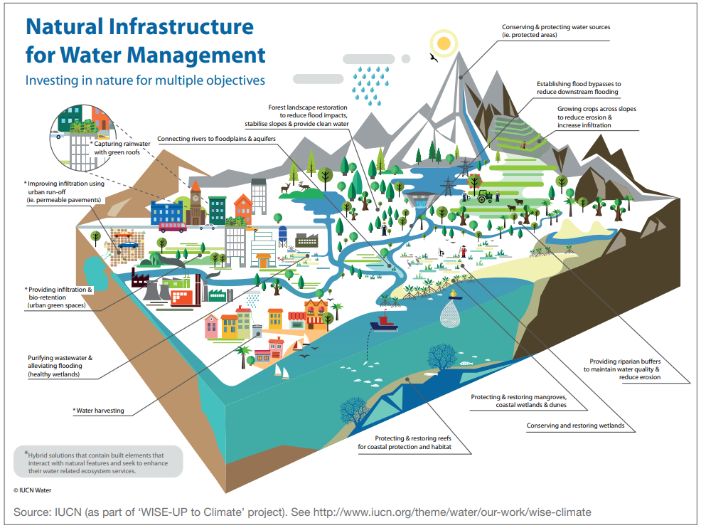
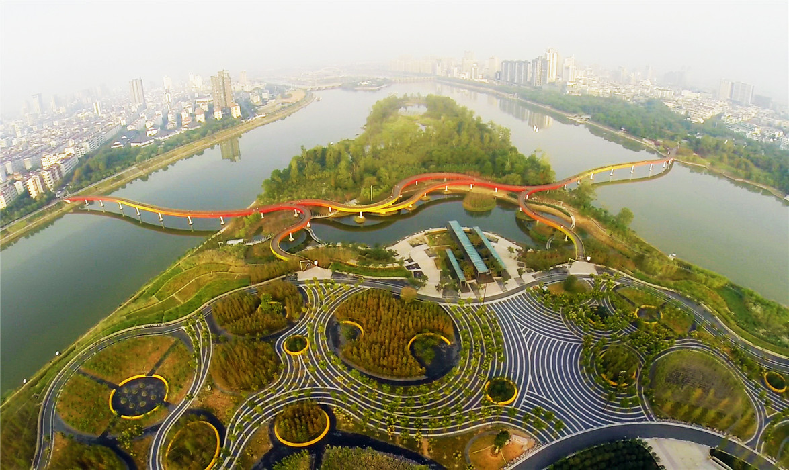
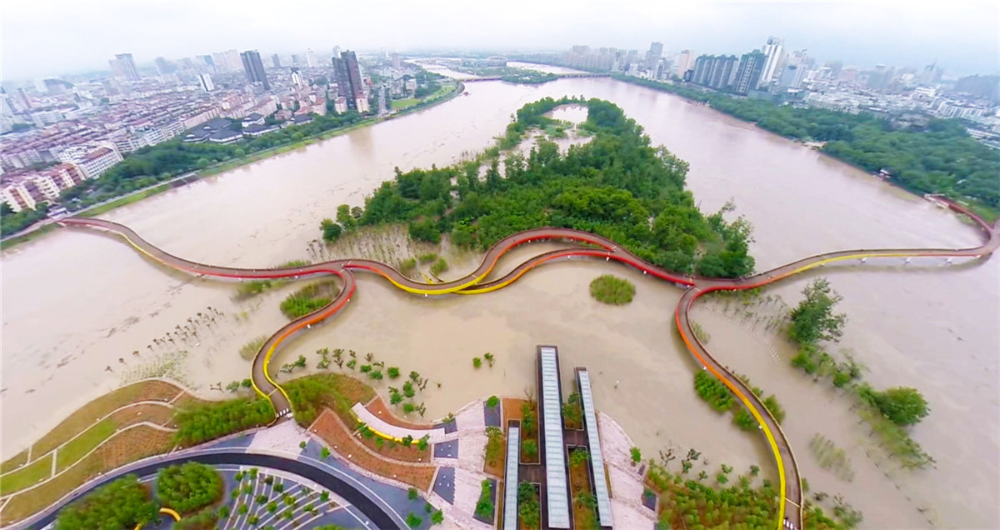

This lecture illustrates how nature-based solutions can be used to regulate and manage extreme water events, such as floods and droughts. A range of nature-based options for fluvial, pluvial and tidal flooding and drought are provided, and case studies are presented where applications of these can be seen in practice.
It is widely acknowledged that climate change is expected to increase the magnitude, frequency and duration of extreme weather. At present, an estimated 4 billion people live in areas of water scarcity (Damania et al. 2017) and approximately 2.3 billion people are affected by flooding (GEF 2018). These figures are expected to rise in the face of climate change. Appropriate water regulation underpins the majority of the SDGs (1, 2, 3, 6, 8, 9, 11, 13, 15, and 17).
In the past, hard engineering structures such as flood walls, embankments, canals, reservoirs and drainage pipes have mitigated the impacts of climate extremes. But, under a changing climate, such infrastructure is now being tested like never before. Nature is able to adapt itself to changing environmental conditions, and therefore nature-based solutions have become more attractive for sustainable development and longer-term climate resilience. Figure 16.1.1 summarises some of the key nature-based solutions available for water management purposes. As shown, the fundamental concept that underpins nature-based solutions in water management is to mimic the inherent natural water cycle as much as possible.

Figure 16.1.1: Nature-based solutions for water regulation (Cohen-Shacham et al. 2016)
In this lecture, we look into the natural options available for regulating flooding in rivers, coasts and urban settings, and use a case study to show how such options have been applied in real life. Similarly, the other extreme side of the spectrum—drought—is described, with a real-life example of nature-based solutions for drought management outlined.
Floodplains are amongst the most productive ecosystems. Traditional engineered solutions have often disconnected floodplains from their rivers or tidal channels, and have contributed to a great loss of ecosystem services from these systems (Bertule et al. 2014). Nature-based solutions allow these ecosystems to thrive, and also offer flexibility and adaptability to further environmental change that built solutions do not provide (Kapos et al. 2019). Due to the complexity of natural systems, these alternative solutions typically address multiple climate challenges at once and can generate larger economic returns because of the co-benefits they create (Kapos et al. 2019). For instance, by restoring upland forests and watersheds to reduce peak flows and stabilise soils in river systems could save water treatment utilities across the world’s largest cities an estimated USD890 million each year (McDonald and Shemie 2014; Kapos et al. 2019) (see Figure 16.1.2).
Table 16.1.1 identifies engineered and nature-based solutions for the three flood types (fluvial, pluvial and tidal) and highlights some of the co-benefits that these alternative solutions provide.
Table 16.1.1: Nature-based solutions for flood adaptation and their co-benefits (Bertule et al. 2014; Kapos et al. 2019; Watkins et al. 2019)
| Flood type | Hard Engineering options | Nature-based solutions | Co-benefits |
|---|---|---|---|
| Fluvial |
|
|
|
| Pluvial/Urban |
|
|
|
| Coastal/Tidal |
|
|
|
As evident from the table, nature-based solutions can protect, complement, or substitute flood risk management infrastructure, and reduce the need for such measures (Kapos et al. 2019). In coastal regions, for instance, salt marshes can reduce non-storm wave heights by an average of 72%, coral and oyster reef systems by 70%, mangroves by 31% and seagrass by 36% (Kapos et al. 2019). It can be two to five times cheaper to restore coastal wetlands and reef systems than to construct submerged breakwaters, which can significantly alleviate the financial burden of such infrastructure measures on some developing countries.
The concept of a “Sponge City” was introduced by the Chinese Central Government in 2013, in response to the increasing flood impacts inundating 234 cities across the country that year (Hall et al. 2019). The approach has challenged the traditional management approach of discharging stormwater runoff and avoiding inundation, and changed it to inviting and utilising stormwater as much as possible. Through the use of rainwater harvesting, permeable pavements, open green spaces, green roofs and water recycling, these sponge cities aim to collect, store, purify and use 70% of rainwater across 80% of the urban area by 2030. The application of this concept is evident in Figure 16.1.2, and has been applied to 16 pilot cities.
Jinhuan City is a prime example of a successful sponge city, with the completion of Jinhua Yanwei Island Park in 2014. The design made use of former sand quarries, planting native wetland species on water-resilient terraced river embankments. The monsoon floods would act as the natural seasonal fertilizer, by depositing silt and nutrients over the terraces. The paved areas are also entirely permeable through extensive use of gravel from the previous quarry and permeable paving (Hall et al. 2019).
The sponge city concept is a great example where urban design aims to mimic the natural environmental processes and provides space for these to occur.

Figure 16.1.2: Application of China’s sponge city concept in Jinhuan Yanwei Island Park (Turenscape 2014)
Droughts have wide-reaching environmental, social and economic impacts, ranging from famine and human mortality, to losses in agriculture and deaths of livestock and wildlife (Kapos et al. 2019). There is significantly less of an evidence-base and scientific focus on the potential of nature-based solutions for drought management. Examples of nature-based solutions for managing water demand (e.g. reducing crop water requirements in irrigation) exist, yet most natural solutions focus on addressing water supply through improved management of water storage, infiltration and transmission. This enables the timing, quantity and quality of water to be optimised for human-related needs (United Nations 2018).
Some natural solutions for addressing impacts of drought are presented in 16.1.2. As is clear in the table, nature-based solutions for droughts are centred around improving the soil quality and vegetation to enhance groundwater recharge. This is due to the soil-vegetation interface acting as the key determinant of the fate of precipitation, whether it is able to infiltrate into the land surface and recharge groundwater or not (United Nations 2018). If the groundwater is appropriately recharged, water availability will increase during times of reduced rainfall. In addition, restoring “Green Belts” of native vegetation will also provide shade to water bodies, allowing more water to infiltrate into the soil as less is evaporated.
These nature-based solutions can also be used alongside small-scale grey infrastructure, to create hybrid approaches. For instance, creating small depressions for water harvesting or extracting underexploited water in landscapes can also relieve water stress. These hybrid approaches should complement one another and harness synergies in relieving drought conditions (United Nations 2018).
Table 16.1.2: Nature-based solutions for addressing drought impacts (Kapos et al. 2019; Watkins et al. 2019)
| Example Impacts | Hard Engineering Options | Nature-based solutions | Potential Co-benefits |
|---|---|---|---|
|
|
|
|
In 1985-1986, the State of Rajasthan in north-west India experienced unusually low rainfall, which, combined with excessive logging, led to the worst drought in the history of this region. The groundwater receded below critical levels, with some areas across the State being declared as “dark zones” – zones that restricted any further groundwater abstraction.
Tarun Bharat Sangh, a local non-governmental organisation (NGO), supported communities to undertake landscape-scale restoration of natural water storages and transfers. Activities were led by women and were centred around the constructed of small-scale water harvesting structures and the regeneration of forests and soils, particularly in the upper catchments. This was done in order to improve the recharge of groundwater resources locally and also further downstream (United Nations 2018).
The outcomes of this management approach have been impressive. Water was brought back to over 1,000 villages across the State, surface water is flowing again in five rivers that used to run dry after the monsoon season, and fisheries have been re-established. The improved groundwater recharge has resulted in groundwater levels rising by an estimated six metres, allowing productive farmland to prosper (increasing from 20% to 80% of the catchment). Finally, critical forest cover that is maintaining the integrity and water-retaining capacity of the soil has increased by 33%, which has simultaneously also provided a home for more antelopes and leopards (United Nations 2018).
This case study shows how when humans adapt to the natural environment, allowing it to operate over its natural cycles without interference, the benefits experienced can be vast.
This mini-lecture has provided an introduction to nature-based solutions for regulating water extremes. A portfolio of options has been provided for both regulating floods and droughts, and case studies have demonstrated how such natural solutions have succeeded in practice.